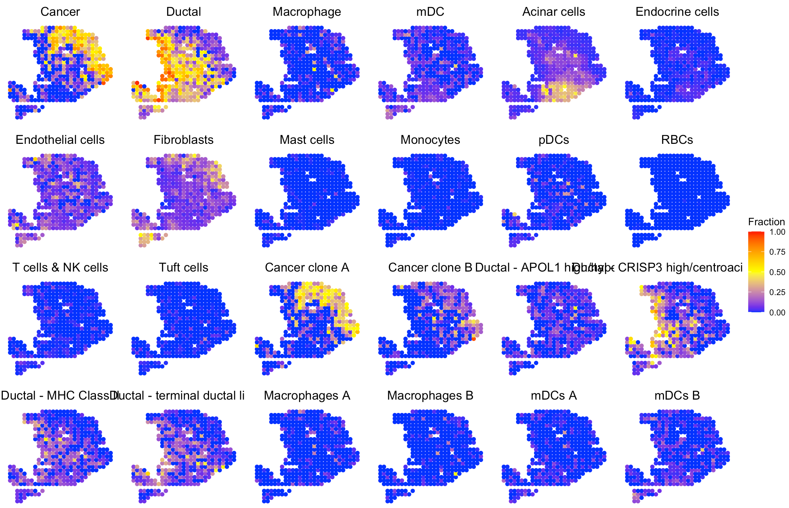
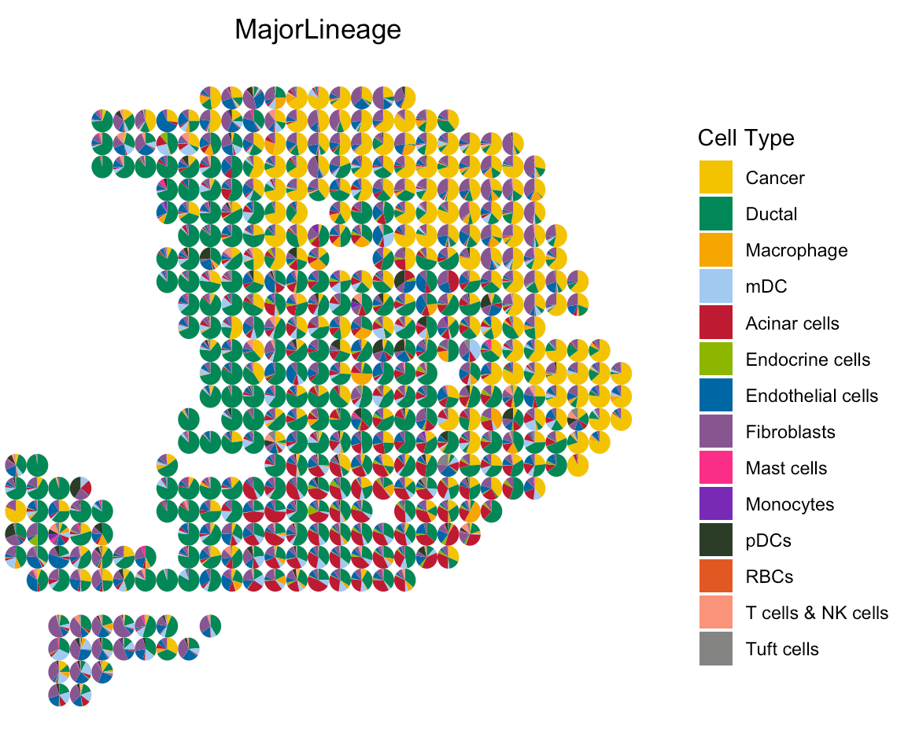

Since most tumor spatial transcriptomics (ST) data do not have matched scRNA-seq data from the same sample, SpaCET does not require malignant, stromal and immune cell reference. However, SpaCET can still accept a customized reference to carry out cell type deconvolution. This tutorial demonstrates how to run SpaCET with a matched scRNA-seq dataset by using a pancreatic ductal adenocarcinoma (PDAC) ST data set from Moncada et al, 2020. Each spot is 100 µm in diameter.
Create SpaCET object
To read your ST data into R, user can create a SpaCET object by using
create.SpaCET.object or
create.SpaCET.object.10X. Specifically, if users are
analyzing an ST dataset from 10x Visium, they only need to input
“visiumPath” by using create.SpaCET.object.10X. Please make
sure that “visiumPath” points to the standard output folders of 10x
SpaCET Ranger, which has both “filtered_feature_bc_matrix” and “spatial”
folders.
Here, since the PDAC ST data set was generated from the original ST
technology, user need create.SpaCET.object to create a
SpaCET object by preparing four types of input data referring to a tumor
ST sample.
- spatial transcriptomics count data. The spatial transcriptomics count data must be in the format of matrix with gene name (row) x spot ID (column).
- spatial location information. The spot coordinates should be in the format of matrix with spot ID (row) x coordinates (column). This 1st and 2nd columns represent X and Y coordinates, respectively.
- path to the H&E image file. The image path can be NA if unavailable.
- platform.
library(SpaCET)
oldST_Path <- system.file("extdata", 'oldST_PDAC', package = 'SpaCET')
load(paste0(oldST_Path,"/st_PDAC.rda"))
# show count matrix
counts[1:6,1:5]
## s1 s2 s3 s4 s5
## A1CF 0 0 0 0 0
## A2M 13 0 4 0 0
## A4GALT 1 0 0 0 0
## A4GNT 0 0 1 0 0
## AAAS 0 0 0 0 0
## AACS 0 0 0 0 0
# show coordinate matrix
spotCoordinates[1:5,]
## coordinate_x_um coordinate_y_um
## s1 2000 2000
## s2 2000 2600
## s3 2000 2800
## s4 2000 3000
## s5 2000 3200
# load ST data to create a SpaCET object.
SpaCET_obj <- create.SpaCET.object(
counts=counts,
spotCoordinates=spotCoordinates,
imagePath=NA,
platform = "oldST"
)
# show this object.
str(SpaCET_obj)Deconvolve cell lineage
We provide SpaCET.deconvolution.matched.scRNAseq to
deconvolve a SpaCET object with a customized scRNA-seq data. User need
to prepare three types of input data referring to the matched scRNA-seq
dataset.
- single cell RNA-seq (scRNA-seq) count data. The scRNA-seq count data must be in the format of matrix with gene name (row) x cell ID (column).
- cell annotation information. This matrix should include two columns, i,e., cellID and cellType. Each row represents a single cell. The name of row should be same as the column cellID.
- Hierarchical tree of cell types. This should be organized by using a list, and the name of each element are major lineages while the value of elements are the corresponding sublineages. If a major lineage does not have any sublineages, the value of this major lineage should be itself.
# load sc data
oldST_Path <- system.file("extdata", 'oldST_PDAC', package = 'SpaCET')
load(paste0(oldST_Path,"/sc_PDAC.rda"))
# show count matrix
sc_counts[1:6,1:5]
## c1 c2 c3 c4 c5
## A1BG 0 0 0 0 0
## A1CF 0 0 0 1 0
## A2M 0 0 0 0 0
## A2ML1 0 0 0 0 0
## A3GALT2 0 0 0 0 0
## A4GALT 0 0 0 0 0
# show cell annotation matrix
sc_annotation[1:6,]
## cellID bio_celltype
## c1 "c1" "Acinar cells"
## c2 "c2" "Ductal - terminal ductal like"
## c3 "c3" "Ductal - terminal ductal like"
## c4 "c4" "Ductal - CRISP3 high/centroacinar like"
## c5 "c5" "Cancer clone A"
## c6 "c6" "Cancer clone A"
# show cell type lineage tree
head(sc_lineageTree)
## $Cancer
## [1] "Cancer clone A" "Cancer clone B"
##
## $Ductal
## [1] "Ductal - APOL1 high/hypoxic" "Ductal - CRISP3 high/centroacinar like"
## [3] "Ductal - MHC Class II" "Ductal - terminal ductal like"
##
## $Macrophage
## [1] "Macrophages A" "Macrophages B"
##
## $mDC
## [1] "mDCs A" "mDCs B"
##
## $`Acinar cells`
## [1] "Acinar cells"
##
## $`Endocrine cells`
## [1] "Endocrine cells"Then, user can run SpaCET.deconvolution.matched.scRNAseq
to carry out cell type deconvolution.
# deconvolve ST data; ~2 minutes
SpaCET_obj <- SpaCET.deconvolution.matched.scRNAseq(
SpaCET_obj,
sc_counts=sc_counts,
sc_annotation=sc_annotation,
sc_lineageTree=sc_lineageTree,
coreNo=6
)
# Since Windows does not support parallel computation,
# please set coreNo=1 for Windows OS.Visualize the cell type proportion
We provide SpaCET.visualize.spatialFeature to present
the spatial distribution of cell types.
# show the spatial distribution of all cell types.
SpaCET.visualize.spatialFeature(
SpaCET_obj,
spatialType = "CellFraction",
spatialFeatures="All",
sameScaleForFraction = TRUE,
pointSize = 1.5,
nrow=4
)
To show cell type composition in pie chart, user can set
spatialType = "CellTypeComposition".
# load the color for cell types
load(paste0(oldST_Path,"/colors_vector.rda"))
# draw scatter pie
SpaCET.visualize.spatialFeature(
SpaCET_obj,
spatialType = "CellTypeComposition",
spatialFeatures = "MajorLineage",
colors = colors_vector,
pointSize = 0.5
)
SpaCET.visualize.spatialFeature(
SpaCET_obj,
spatialType = "CellFraction",
spatialFeatures = c(
"Cancer clone A",
"Cancer clone B",
"Acinar cells",
"Ductal - CRISP3 high/centroacinar like"),
nrow=2
)
User can use the following code to visualize the marker gene expression level and verify the cell type deconvolution.
# Markers for cancer clone A and B, acinar cell, and centroacinar like ductal cell
SpaCET.visualize.spatialFeature(
SpaCET_obj,
spatialType = "GeneExpression",
spatialFeatures = c("TM4SF1","S100A4","PRSS1","CRISP3"),
nrow=2
)